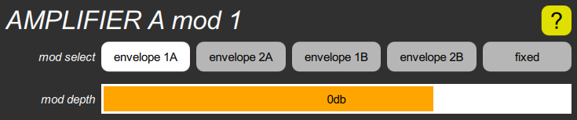

AMPLIFIER mod cluster

The AMPLIFIER section has two of these for each channel, called mod 1 and mod 2. Each one contains a mod select parameter that chooses a modulation source, and a mod depth parameter that adjusts its level. The two modulations are added together, and then multiplied by the post mod value.
The mod select parameter can select any envelope. The default is envelope 1A for mod 1, envelope 1B for mod 2. You can also choose a fixed 1-unit value, which is only useful in the B channel, when the patch parameter uses the B amplifier to control the mix of the B oscillator with the A oscillator. If you use it on an amplifier that is connected to the output, the note will never turn off, which is likely not what you want. But in the original Chroma, you couldn’t set the mix of the B oscillator without wasting an envelope generator.
The mod depth is shown in decibels, and has a range from off to +6db above the nominal level. The default value for mod 1 is 0db, and the default for mod 2 is off. However, the mod 1 sliders have a “significant” value of off, and the mod 2 sliders have a “significant” value of 0db, which you can quickly set by tapping.